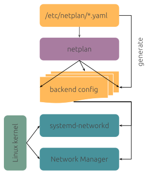

# 7.4 netplan 管理网络
转载自：https://www.jianshu.com/p/174656635e74，对原文有补充
netplan简介
netplan:抽象网络配置生成器 ，是一个用于配置 Linux 网络的简单工具。 通过 Netplan ，你只需用一个 YAML 文件描述每个网络接口需要配置成啥样即可。 根据这个配置描述， Netplan 便可帮你生成所有需要的配置，不管你选用的底层管理工具是什么。
工作原理
Netplan 从 /etc/netplan/*.yaml 读取配置，配置可以是管理员或者系统安装人员配置； 也可以是云镜像或者其他操作系统部署设施自动生成。 在系统启动阶段早期， Netplan 在 /run 目录生成好配置文件并将设备控制权交给相关后台程序。

netplan 目前支持以下两种 网络管理工具 ：
- NetworkManager
- Systemd-networkd
一言以蔽之，从前你需要根据不同的管理工具编写网络配置，现在 Netplan 将管理工具差异性给屏蔽了。 你只需按照 Netplan 规范编写 YAML 配置，不管底层管理工具是啥，一份配置走天下！
配置
很显然，没有配置， Netplan 啥都做不了。 最简单有用的配置片段如下：
network:
version: 2
renderer: NetworkManager
这个配置让 NetworkManager 管理所有网络设备 （默认，只要检测到以太网设备接线，便以 DHCP 模式启动该设备）。
使用 Systemd-networkd ，则不会自动启动网络设备； 每个需要启用的网卡均需要在 /etc/netplan/ 配置文件中指定配置。 网络配置示例如下：
network:
ethernets:
enp0s3:
addresses: []
dhcp4: true
optional: true
enp0s8:
addresses: [192.168.56.3/24]
dhcp4: no
optional: true
version: 2
这个配置为 enp0s3 网卡开启 DHCP 自动获取地址； 为 enp0s8 网卡配置了一个静态 IP 192.168.56.3 ，掩码是 24 位。
各类配置示例
DHCP
network: ethernets: enp0s3: addresses: [] dhcp4: true version: 2静态配置
network: ethernets: enp0s8: addresses: [10.0.0.2/24] gateway4: 10.0.0.1 nameservers: addresses: [8.8.8.8,8.8.4.4] dhcp4: no version: 2wake on lan
network: renderer: networkd ethernets: ens33: match: macaddress: 00:e0:4c:2a:0d:18 dhcp4: true wakeonlan: true version: 2
所有配置项见 官方文档
netplan选项
netplan 操作命令提供两个子命令：
netplan generate：以/etc/netplan配置为管理工具生成配置；netplan apply：应用配置(以便生效)，必要时重启管理工具；
因此，调整 /etc/netplan 配置后，需要执行以下命令方能生效：
$ netplan apply